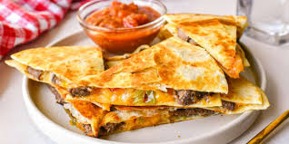

Quesadillas
Quesadillas Recipe
Homepage

My own quesadilla recipe.
This quesadilla recipe involves just throwing anything into a tortilla
while it fries in a pan.
Ingredients
- Large tortillas
- Shredded mexican cheese
- Tomatoes
- Onion
- Lettuce
- Sour cream
- Ground meat
Steps
- Pan fry ground meat (my choice is turkey).
- Move ground meat to a bowl and throw in onions and tomatoes. Avoid crowding the pan to prevent the veggies from steaming rather than frying.
- After frying everything, slice a tortilla down the middle halfway through the tortilla.
- Place the tortilla in the pan along with ingredients in each section of the tortilla.
- Fold the tortilla over itself in fourths.
- Take the quesadilla out and put some sour cream on the side. Enjoy!